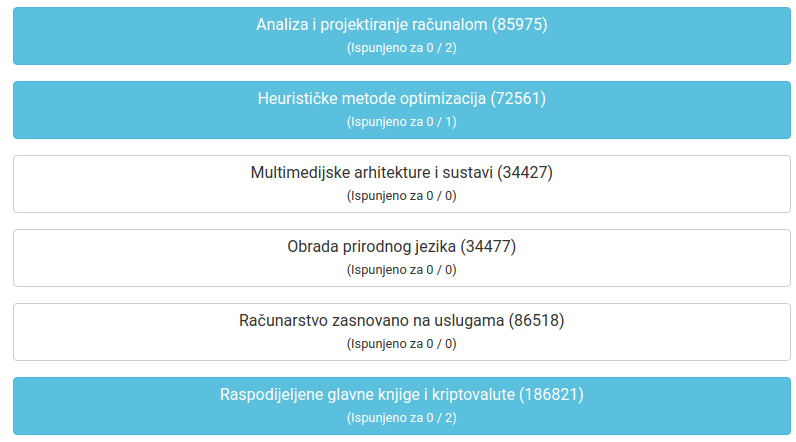

[obrisani korisnik] šta ja znam, ovo je ona regularna
međutim ovo mi je krindž

kao prvo, ne mogu dati ocjenu za pola ponuđenih predmeta, a kao drugo predmet koji sam već prošao mi je ispisan pa ne mogu ispuniti za njega anketu. Dosta bezobrazno, nadam se da će ispraviti ovih dana, barem za Obradu prirodnog jezika.